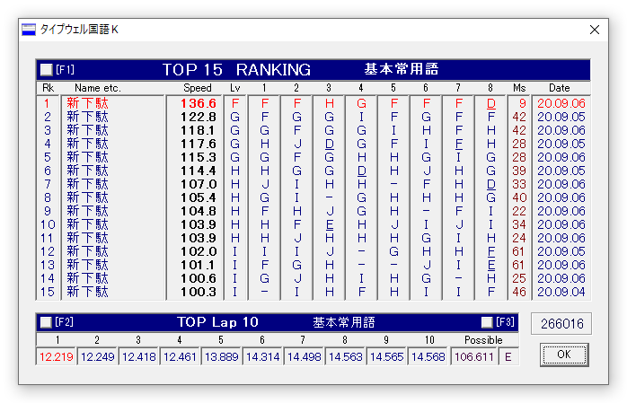
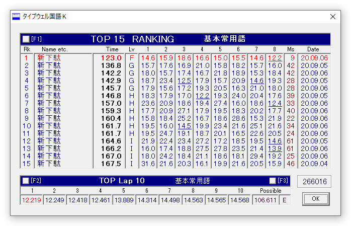
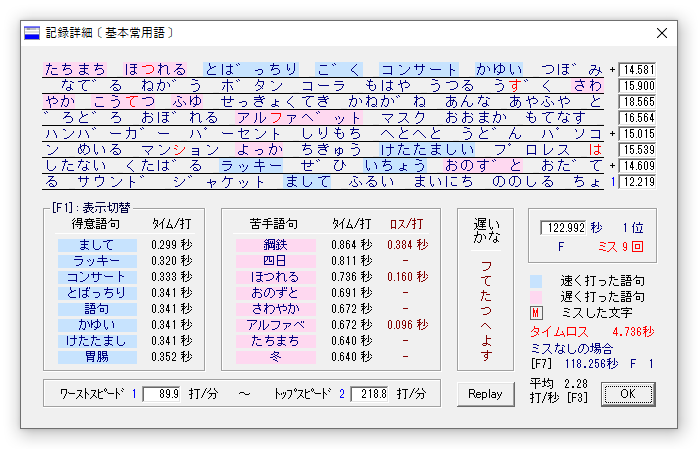
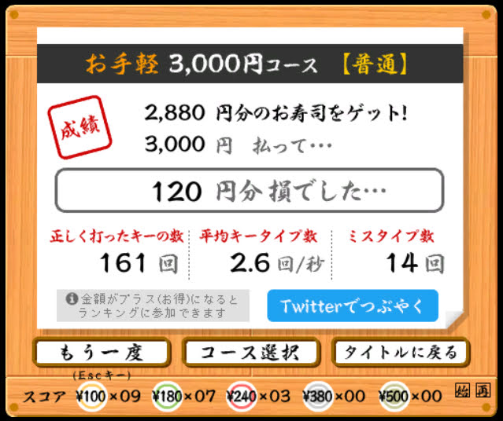

昨日Gに到達してから、遅さの一因が拗音入力のたどたどしさにあると感じ、カタカナ語を集中的に練習したら、案外すぐにFに到達した。
この勢いで寿司打も0円に到達してくれないかなーと頑張ってみたけれど、あと一歩届かず。
でも確かな手応えはあり、次の課題は一瞬で打鍵できない文字を減らすことかな。最近一瞬で打鍵できない文字が明らかに両手同時押しの特定の文字にあると感じてきて、それを減らすにはどうしたらいいのかはわからないけど、とりあえず常用を続けて毎日少しずつ手に馴染ませるほかないという印象。
拗音拡張みたいに記憶自体が不確実なキーに関しては集中的な練習の効果があるけれど、反射スピードの向上とか記憶の定着とかは多分毎日継続することでしか伸びてはいかない気がするので、気ままに普段遣いしていくしかないかな。
ただやはり、「みゃみゅみょ」「びゃびゅびょ」「シェジェチェ」のように、頻度が低い拗音拡張については、普段遣いだけでは定着が遅れそうなので、たまにカタカナ語中心の練習をすることで補っていこう。